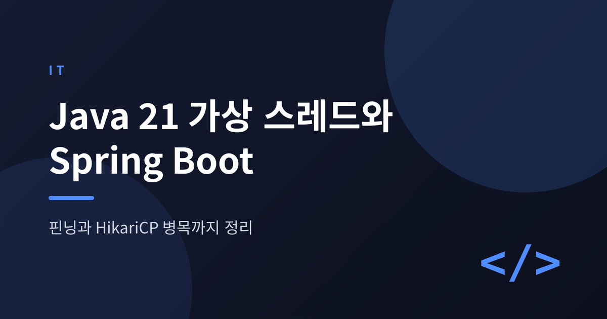
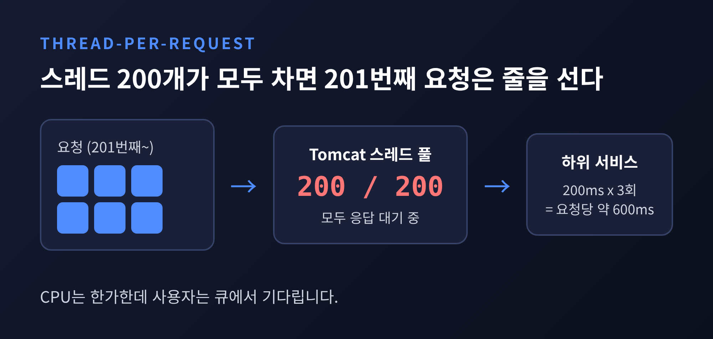
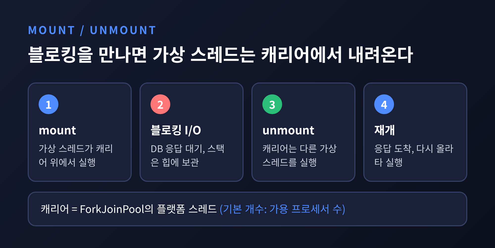
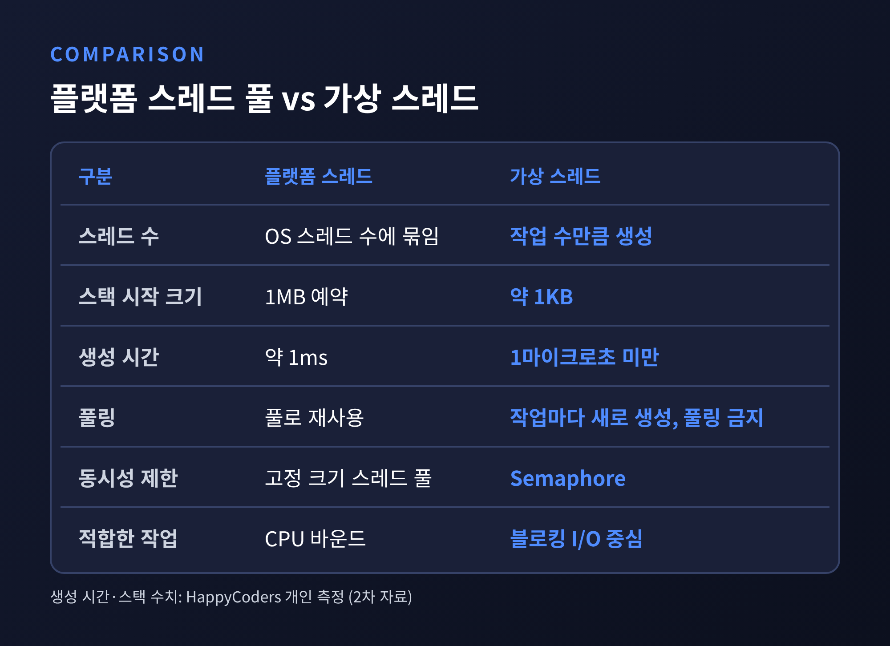
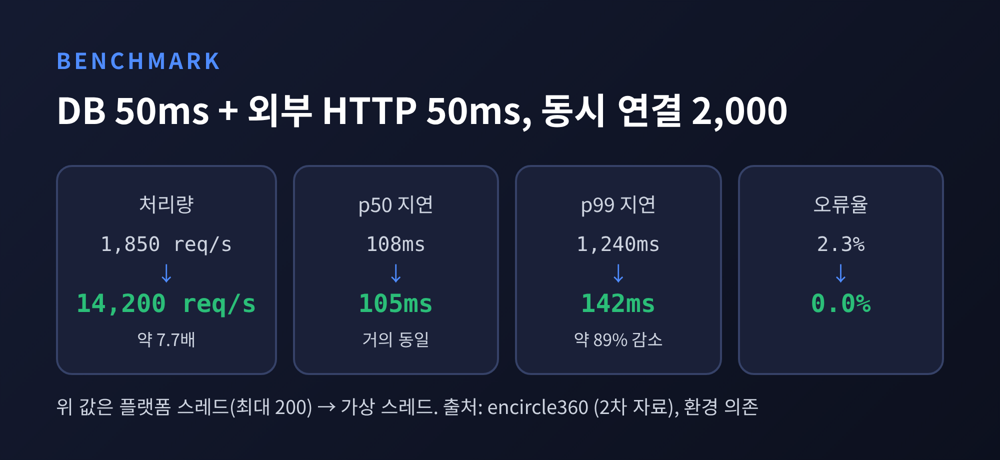
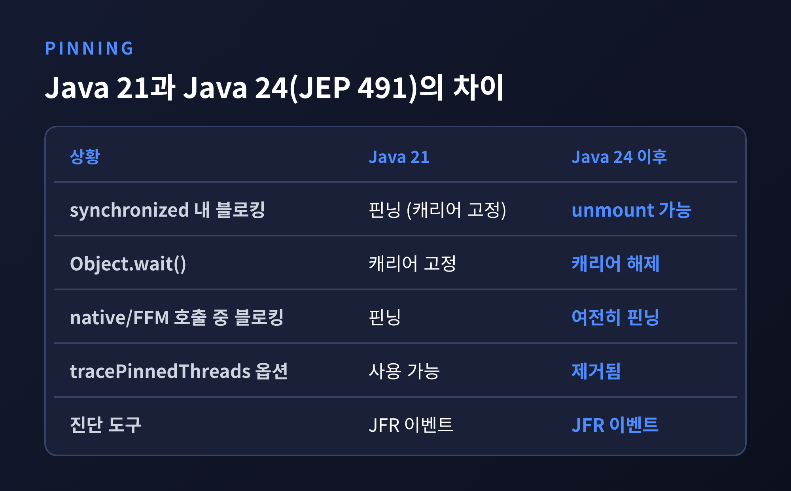
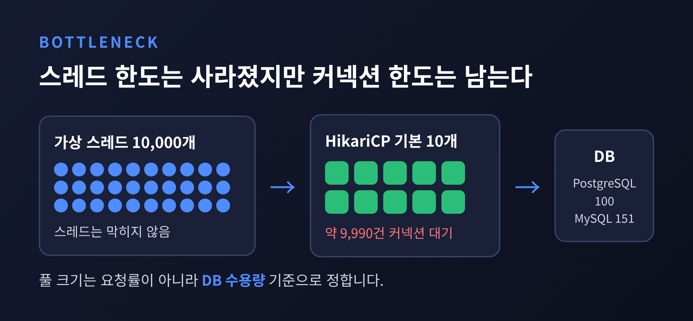

이번 글에서는 Java 21 가상 스레드를 Spring Boot에 적용할 때 알아 두어야 할 원리와 한계를 정리해 보겠습니다.
결론부터 말씀드리면, 가상 스레드는 블로킹 I/O가 많은 서버의 처리량을 크게 늘려 줍니다. 다만 핀닝과 DB 커넥션 풀이라는 두 가지 벽이 남아 있습니다.
내장 Tomcat은 기본적으로 약 200개의 스레드를 둡니다. 요청 하나가 들어오면 스레드 하나가 끝까지 붙들고 처리합니다.
문제는 그 스레드가 대부분 놀고 있다는 점입니다. 하위 서비스를 200ms씩 세 번 순차 호출한다면 요청 하나에 약 600ms가 걸립니다. 그동안 스레드는 응답을 기다릴 뿐 CPU를 거의 쓰지 않습니다.
200개가 모두 차면 201번째 요청은 큐에서 기다립니다. CPU 사용률은 낮은데 사용자는 줄을 서 있는 셈입니다.
플랫폼 스레드가 이렇게 귀한 이유는 OS 스레드 하나를 수명 내내 붙잡기 때문입니다. 스레드 수가 곧 OS 스레드 수에 묶입니다.

가상 스레드도 java.lang.Thread입니다. 다만 OS 스레드에 묶이지 않습니다.
Java 런타임이 가상 스레드를 캐리어(carrier)라 부르는 플랫폼 스레드 위에 올려 실행합니다. 블로킹 I/O를 만나면 가상 스레드는 캐리어에서 내려오고, 캐리어는 곧바로 다른 가상 스레드를 실행합니다. 응답이 도착하면 다시 올라탑니다.
캐리어는 ForkJoinPool에서 돌며 기본 개수는 가용 프로세서 수입니다. 소수의 OS 스레드가 수많은 가상 스레드를 번갈아 태우는 구조입니다.
내려오는 순간 가상 스레드의 스택은 힙에 보관됩니다. 재개될 때 다시 복사되므로 블로킹이 싸기는 해도 공짜는 아닙니다.
비용 차이는 상당합니다. 한 개발자의 실험에 따르면 가상 스레드는 약 1KB 스택으로 시작하고 생성에 1마이크로초도 걸리지 않습니다. 플랫폼 스레드는 1MB를 예약하고 생성에 약 1ms가 듭니다. 같은 실험에서 1초짜리 작업 10만 개를 가상 스레드로 돌리니 약 4초, 스레드 풀로는 거의 17분이 걸렸다고 합니다. 개인 측정치이니 방향성 정도로 보시길 권합니다.

한 가지 오해는 바로잡아야 합니다. Oracle 문서의 표현을 빌리면 가상 스레드는 속도(latency)가 아니라 규모(throughput)를 줍니다. 요청 하나가 빨라지지는 않습니다.
가장 큰 차이는 풀링에 대한 발상입니다.
예전엔 스레드가 귀했으니 풀로 아껴 썼습니다. 지금은 스레드가 흔하니 작업마다 하나씩 만들고 버립니다. Oracle 문서도 가상 스레드는 공유 자원이 아니라 작업을 나타내야 한다고 설명합니다. 그래서 Executors.newVirtualThreadPerTaskExecutor()를 쓰고, 가상 스레드를 풀에 담지 않습니다.
동시성을 제한하고 싶다면 고정 크기 스레드 풀 대신 Semaphore를 씁니다. 블로킹된 호출자의 대기열이 곧 풀의 작업 큐 역할을 합니다.

CPU 연산이 많은 작업에는 맞지 않습니다. 가상 스레드는 선점되지 않으므로 CPU 바운드 작업이 캐리어를 오래 쥐고 있으면 다른 가상 스레드가 굶습니다. 이런 작업은 코어 수에 맞춘 플랫폼 스레드 풀이 낫습니다.
Oracle 문서는 경험칙도 하나 건넵니다. 동시에 1만 개 안팎의 가상 스레드가 생길 일이 없다면 이득을 보기 어렵다는 것입니다.
Spring Boot 3.2부터는 설정 한 줄이면 됩니다. Java 21 이상에서 아래 속성을 지정합니다.
spring.threads.virtual.enabled=true
켜면 Tomcat과 Jetty의 요청 처리가 가상 스레드에서 이뤄집니다. applicationTaskExecutor는 가상 스레드를 쓰는 SimpleAsyncTaskExecutor가 되어 @Async와 MVC 비동기 처리도 따라갑니다. 직접 정의한 executor 빈은 바뀌지 않으니 확인이 필요합니다. Java 21 미만에서는 속성을 줘도 아무 일도 일어나지 않습니다.
효과는 어느 정도일까요. 한 마이그레이션 사례에서는 DB 50ms와 외부 HTTP 50ms가 섞인 엔드포인트에 2,000개 동시 연결을 60초간 걸었습니다. 플랫폼 스레드 200개로는 초당 약 1,850건, 가상 스레드로는 약 14,200건이 나왔습니다. 약 7.7배입니다.

눈여겨볼 대목은 p50 지연이 108ms에서 105ms로 거의 그대로라는 점입니다. 바뀐 것은 p99입니다. 1,240ms에서 142ms로 내려갔고 오류율은 2.3%에서 0%가 되었습니다. 요청이 빨라진 것이 아니라 풀 앞에서 줄 서던 시간이 사라진 결과입니다.
BellSoft의 시험에서는 약 2배였습니다. 수치는 하드웨어와 시나리오에 크게 좌우되므로, 자기 서비스에서 직접 재 보시길 권합니다.
핀닝(pinning)은 가상 스레드가 블로킹 중에도 캐리어에서 내려오지 못하는 현상입니다. 캐리어가 같이 막히니 소수의 캐리어가 금세 포화됩니다.
Java 21에서 핀닝이 일어나는 경우는 두 가지입니다. synchronized 블록이나 메서드 안에서 블로킹할 때, 그리고 native 메서드나 FFM API를 호출할 때입니다. Oracle 문서는 짧거나 메모리 안에서 끝나는 작업이라면 문제 없고, 잦고 오래가는 핀닝이 확장성을 해친다고 설명합니다.
해법은 I/O를 감싼 synchronized를 ReentrantLock으로 바꾸는 것이었습니다. 진단에는 JFR의 jdk.VirtualThreadPinned 이벤트(기본 임계 20ms)나 -Djdk.tracePinnedThreads 옵션을 썼습니다.
Java 24에서 상황이 달라졌습니다. JEP 491 덕분에 가상 스레드가 synchronized 안에서 블로킹하거나 Object.wait()을 호출해도 캐리어에서 내려올 수 있습니다. 이 때문에 jdk.tracePinnedThreads 옵션은 제거되었습니다. Dan Vega의 측정에서 서로 다른 락을 쓰는 5,000개 가상 스레드 예제는 JDK 21의 31.8초에서 JDK 24의 0.45초로 줄었습니다. 상품별 락을 쓰는 Spring Boot 재고 예제는 초당 800건에서 4,264건으로 늘었습니다.

그렇다고 모두 해결된 것은 아닙니다. 네이티브 프레임이 스택에 있는 채 블로킹하는 경우는 여전히 핀닝됩니다. 같은 락을 두고 경합하면 당연히 서로 기다립니다. 게다가 운영 환경 상당수가 아직 Java 21 LTS에 머물러 있어, 이 개선을 누리지 못하는 곳이 많다는 지적도 있습니다.
가상 스레드가 없애 주는 것은 스레드 한도입니다. 커넥션 한도는 그대로 남습니다.
Tomcat 스레드가 200개일 때는 DB 커넥션도 많아야 200개면 됐습니다. 이제는 동시 요청 1만 건이 몰려도 스레드가 막히지 않으니, HikariCP 기본값 10개 앞에 약 9,990건이 줄을 섭니다. 기다림이 스레드에서 풀로 자리를 옮겼을 뿐이며, 오히려 눈에 덜 띕니다. 대기가 길어지면 "Connection is not available" 예외로 이어집니다.

그렇다고 풀을 마구 키우는 것은 답이 아닙니다. PostgreSQL의 기본 max_connections는 100, MySQL은 151입니다. DB가 감당할 수 있는 만큼이 한계입니다.
HikariCP 위키가 내놓는 출발점은 (코어 수 × 2) + 유효 스핀들 수입니다. 4코어 서버라면 약 10입니다. 스레드가 코어보다 많아지면 컨텍스트 스위칭만 늘어납니다. 위키가 인용한 Oracle 사례에서는 풀 크기만 줄였는데 응답 시간이 약 100ms에서 2ms로 내려갔습니다.
실무에서는 이렇게 접근해 볼 만합니다.
connectionTimeout은 서비스 성격에 맞게 정합니다. 넉넉히 기다리게 하자는 의견과 짧게 잡아 빨리 실패하자는 의견이 갈립니다.Semaphore로 따로 제한합니다. 다만 Oracle 문서는 커넥션 풀이 이미 세마포어라서 그 위에 중복으로 얹지 말라고 합니다.synchronized를 쓰면 핀닝이 숨어 있을 수 있습니다. PostgreSQL JDBC 42.7 이후에 개선이 있었다는 보고가 있으나 2차 자료이니 릴리스 노트로 직접 확인하세요.정리하면 점검 항목은 다섯 가지입니다.
ThreadLocal에 무거운 객체를 담아 두었는지 봅니다. 가상 스레드는 재사용되지 않으므로 작업마다 새로 만들어집니다.한계도 분명히 해 두겠습니다. 위에 인용한 벤치마크 대부분은 개인이나 블로그의 측정치입니다. 환경이 다르면 결과도 다릅니다.
끝으로 한 마디만 더 드리겠습니다.
가상 스레드는 스레드를 풀어 줄 뿐, 그 뒤에 있는 자원까지 풀어 주지는 않습니다. "병목은 사라지지 않고 자리를 옮긴다."
스레드 대신 커넥션 풀을 먼저 들여다보며 시작하시겠냐고 물으신다면, 저는 그렇게 하시길 권하겠습니다.